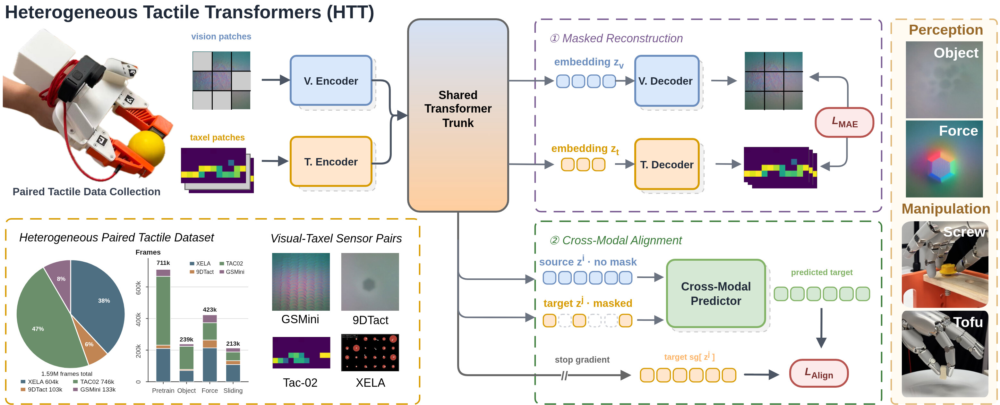

Heterogeneous Tactile Transformer
Conference on Robot Learning (CoRL), 2026
Best Paper Runner-Up Award · RSS 2026 Workshop on Tactile for FM
Paper
Code
Dataset
Website
Bib
@inproceedings{bi2026htt,
title = {Heterogeneous Tactile Transformer},
author = {Bi, Jianxin and Wang, Qiang and Reddy, Jayaram and Lin, Kelvin and Khajikhanov, Soibkhon and Gao, Ruihan and Soh, Harold},
booktitle = {Conference on Robot Learning (CoRL)},
year = {2026},
eprint = {2606.29948},
archiveprefix = {arXiv},
primaryclass = {cs.RO},
url = {https://arxiv.org/abs/2606.29948},
dataset = {https://huggingface.co/datasets/AllenBi21/HTT-dataset},
}